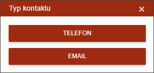
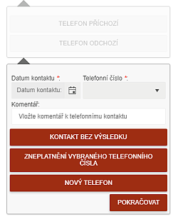

Kontakt s dlužníkem
IP touto funkcí provádí zápis o libovolném kontaktu s dlužníkem. V dialogu vybere, zda se jedná o TELEFON/EMAIL ODCHOZÍ/PŘÍCHOZÍ. Otevře se dialogové okno, které jednotlivými kroky vede uživatele k zapsání výsledku kontaktu.

IP musí zadat informace o provedeném kontaktu, přičemž identifikuje, s kým byl proveden kontakt (dlužník, babička, soused, atd.). Tento dialog se nepoužívá pro zápis osobního kontaktu, ale pouze pro telefonát či email. IP má povinnost zaznamenat nejenom kdo volal a proč, ale hlavně kontaktní telefon a další informace, které by mohly do budoucna pomoci s dalším kontaktem.

Na základě kontaktu a jeho vývoje se postupně skládá dialog. Všechny parametry spisu se následně nastaví dle výsledku hovoru. Výsledek zápisu je možné prohlédnout v podzáložce Historie spisu.
Příklad použití:
IP VOLÁ - proklikem si otevře spis, najde číslo a volá. Zároveň stiskne tlačítko KONTAKTY - spustí se proces. Zde může vzniknout několik druhů výsledků:
Toto akční tlačítko je přístupné pouze pro zpracování jednoho spisu. Při výběru více spisů je nepřístupné.